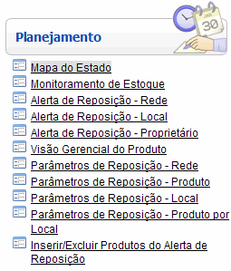
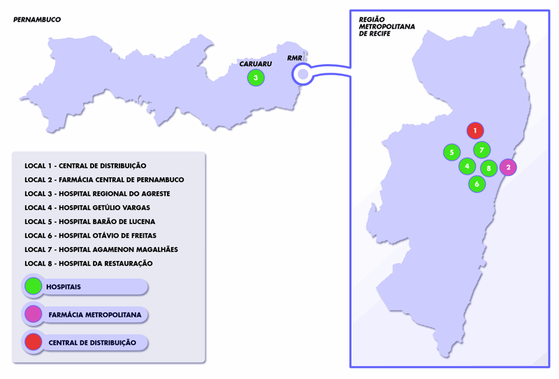
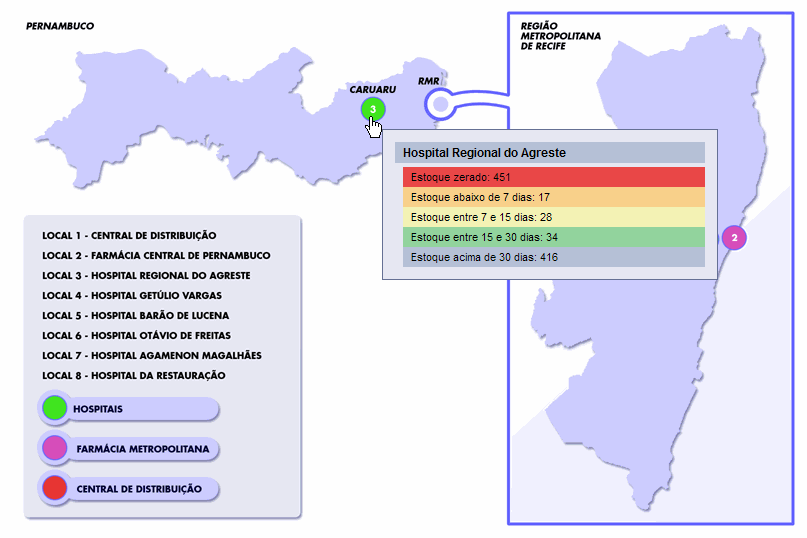

Mapa do Estado [ Voltar ]Esta tela do sistema permite uma
visão geral do estoque em todas as unidades do sistema. Ao posicionar o
mouse sobre as unidades de estoque distribuídas no mapa de Pernambuco,
serão exibidas informações comoestoques zerado e próximos de acabar. O formulário "Mapa do Estado" encontra-se dentro do menu "Planejamento". 
Ao clicar no formulário, o sistema exibirá a seguinte tela:  Para exibir detalhes de estoque de uma unidade, siga os passos abaixo: 1º Passo: posicione o mouse sobre a unidade desejada. Assim que o cursor do mouse encontra uma das unidades em destaque, informações como estoque zerado, estoque abaixo de 7 dias, entre outras, são exibidas ao usuário. Veja imagem abaixo: |